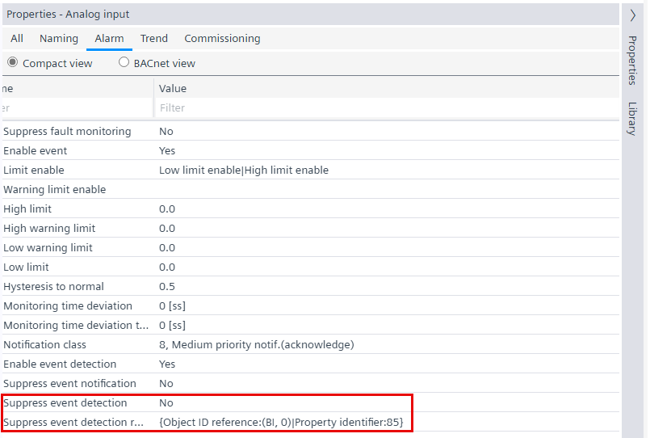
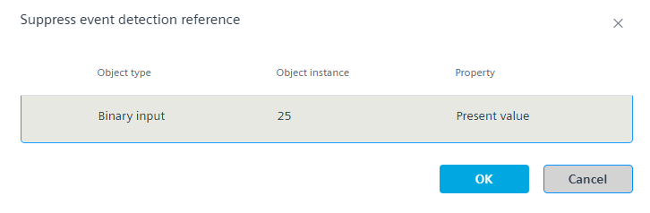

Suppressing event detection
Event detection can be suppressed permanently or with a data point reference. When using the data point reference, the event is only suppressed for as long as the corresponding data point property is active.

NOTICE

Events are not detected
Events are not forwarded to a recipient.
- Only use this function if there is no foreseeable danger if events are not forwarded.
Event detection permanently suppressed
- Go to Building > Building structure.
- Right-click a device and select Go to engineering.
- Open the I/O configuration task or BACnet objects task.
- In the Plants navigation view, select a data point.
- Open the Properties tab.
- Go to the Alarm tab.
- Select the Compact view option.
- From the Suppress event detection drop-down list, select Yes.
Object analog input (AI)
Note: The Suppress event detection reference field must be empty.
Event detection suppressed by data point reference
- Go to Building > Building structure.
- Right-click a device and select Go to engineering.
- Open the I/O configuration task or BACnet objects task.
- In the Plants navigation view, select a data point.
- Open the Properties tab.
- Go to the Alarm tab.
- Select the Compact view option.
- Double-click the Suppress event detection reference property.
- The Suppress event detection reference dialog box opens.

Note: It is only possible to make a data point reference within the device.
Object analog input (AI) - Do the following:
- In the Object type drop-down list, select the object type, for example,
Binary input. - In the Object instance field, enter the object instance number, for example,
25. - In the Property drop-down list, select the desired property, for example,
Present value. - Click OK.
Note: The Suppress event detection property must be set to No.